CAN++ User Manual
Overview
CAN++ is a free Windows program for receiving, transmitting and analyzing (.asc, .blf) CAN bus messages (CAN Classic and CAN FD) for using with SuperCAN devices or without CAN hardware (virtual bus). After import of CAN data base files (.dbc, .arxml) CAN signals are shown in symbolic form. Signals can be presented as graphics (wave forms) too.
Furthermore:
- CAN simulation is possible by programming CAN behaviour in C++.
- CAN traces can be generated, imported and replayed (.asc format, .blf can be imported).
- Diagnostics can be performed (PDX import, fault memory, measurement and identification data)
There are several devices which are supported by SuperCAN firmware and can be used with CAN++. For example: - Open Source Hardware: USB_CAN-FD - Off the shelf: Adafruit Feather M4 CAN Express (simple drag & drop of firmware)
CAN++ can be just started (no installation).
Trace view
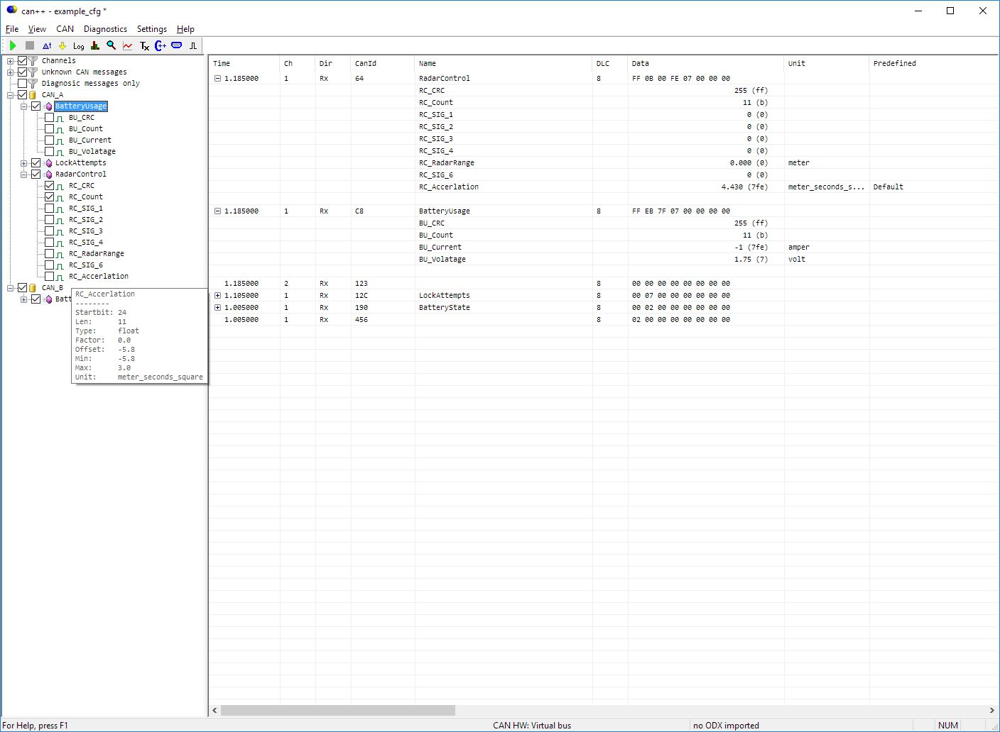
In trace view following features can be used:
-
toggle between update view and stream view
- update view: displays each message on one row an updates its values
- stream view: one row for each incoming message, so it is filling the screen quickly (scroll view)
-
switch on delta time mode so time values show the difference to last message of same Id. So this shows the cycle time.
-
sort view by clicking on headers of each column
-
right click shows menu to:
- clear view
- "copy all" => copy trace view contents to clip board
- import a trace
- "Go to..." => go to a certain time in stream view
Import Trace file
Trace files (.asc or .blf) can be imported and are shown in trace window. Via menu:
CAN => Trace import...
or by right clicking in trace view window
Also signals from trace can be shown in graphical view either by:
1. pressing Reload button in graphn windows after import
2. selecting signals for graphical showing before import (checkbox in main window left tree view)
Option 2. is the best option for big trace files
Replay Trace file
Trace files (.asc or .blf) can be imported and replayed. Via menu:
CAN => Replay => Trace file...
Loop mode can be set to replay the file continuously (on reaching end of file it is started from beginning):
CAN => Replay => Loop
Replay buffer can be cleared by:
CAN => Replay => Clear replay buffer
CAN data bases
CAN data bases files (.dbc, .arxml) can be imported via menu:
CAN => CAN Data Base => Import...
or in the left tree view in the main window by:
- right mouse click and "Import Data Base..."
- drag and drop data base where multiple data base files can be dropped at once
CAN transmit
CAN messages can be transmitted via menu:
CAN => Transmit...
or by toolbar
The features are:
- send options:
- cyclic
- once
- with time offset
- manual by key
- manual by click on button "Now"
- define signals as raw or physical values
- or define signals with wave configurator
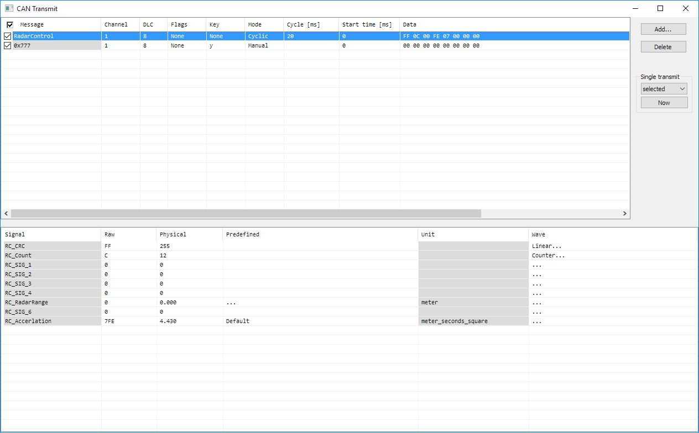
By clicking on cell in column "Wave" for a signal a wave form can be specified for a signal instead of using a static value:

Add a CAN message to transmit list
By pushing button Add.. a CAN message can be added. All CAN data bases are shown, so a CAN message can be selected and added.
By selecting Raw 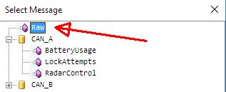 and pushing Add (or just double clicking Raw) a CAN Id can be defined by hand (hex value) 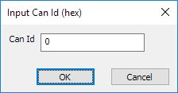
CAN logging
CAN traffic can be logged to file in well known ASC format. Via Menu:
CAN => Log to file ...
or by toolbar
Logging files are stored in folder log where file name is generated containing the time stamp.
CAN hardware configuration
Activate hardware
Select connected hardware from list
Settings => Hardware Select
Change hardware configuration
Go to
Settings => Channel Configuration
Select a channel in the list to see its parameters. Pushing Apply will set the parameters. The checkbox determines whether the channel is active or not.
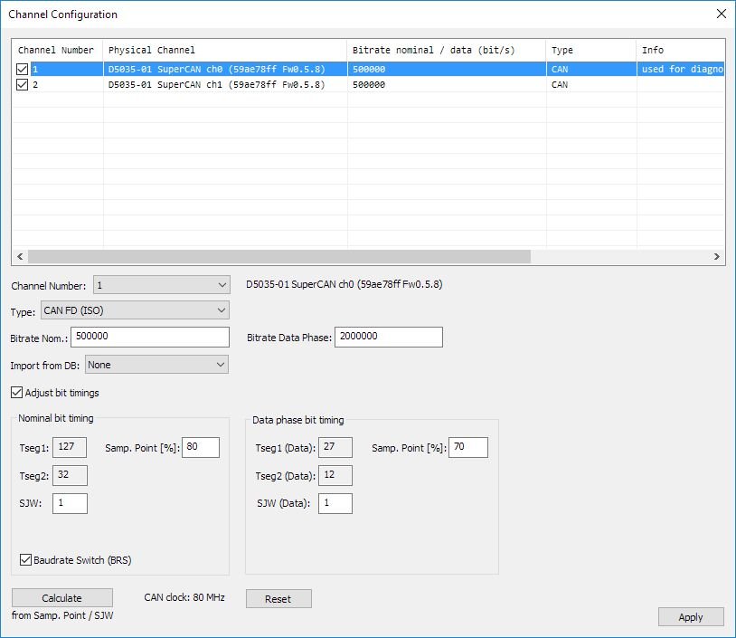
Dialog data
| widget | function | notes |
|---|---|---|
| Channel Number | logical channel number | This number is used in all other dialogs. So this number maps to the selected physical channel in the list above. |
| Type | CAN type | CAN classic or CANFD type |
| Import from DB | import channel settings from DBC | |
| Adjust bit timings | enable bit timing config | bit timing parameters widget show up |
| Calculate | calculate bit timing values | values are calculated based on Sample Point value |
| Reset | undo changes in bit timings | |
| ## Options | ||
| Go to |
Settings => Options
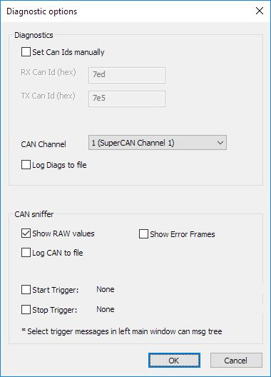
Diagnostic options
| widget | function | notes |
|---|---|---|
| Set Can Ids manually | assign Diagnostic CAN Ids | allows setting CAN Ids for RX/TX. Otherwise CAN Ids are taken from ODX |
| CAN Channel | channel for diagnostics | |
| Log Diags to file | log diagnostic data to folder log |
CAN sniffer options
| widget | function | notes |
|---|---|---|
| Show RAW values | show signal raw | beside physical signal value show raw bus signal value too |
| Show Error Frames | error frame enable | if enabled trace performance may go down |
| Log CAN to file | log CAN data to folder log | |
| Start Trigger | Start CAN Id trigger | CAN Id which triggers trace/simulation start, which is chosen in CAN DB tree in left main window by right mouse click |
| Stop Trigger | Stop CAN Id trigger | CAN Id which triggers trace/simulation stop, which is chosen in CAN DB tree in left main window by right mouse click |
Remote control
CAN++ can be remote controlled. To do so start CAN++ with option -server on command line:
can++.exe -server
Currently following actions can be taken:
- Start CAN bus
- Stop CAN bus
-
Send a generic command to C++ simulation, which can be used to trigger self-defined actions, examples may be:
- call a test function
- set a global variable to switch behaviour
- send a CAN message provided by command string
- etc.
Please see client example source code (Python, C# and C++) in folder examples/remote_control.
Filtering
Filtering is done by the check boxes in the left tree view in the main window. If a check box is deselected than corresponding data base, can message or channel is filtered out in trace view window. Apart from that the check boxes for signals work es enable/disable for graphical view.
CAN signal graphs
CAN signals can be shown as graphs by:
CAN => Graph...
or by toolbar
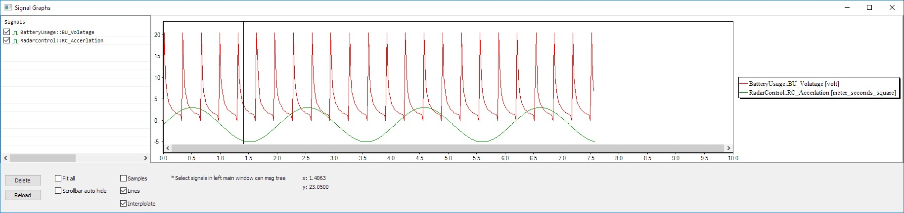
Enabling signals as graphs is done by the check boxes in the left tree view in the main window.
CAN programming in C++
CAN++ comes with an IDE and an integrated C++ compiler. So not further installation is needed. For each C++ file a separate DLL will be created on compiling. Each DLL is loaded when pushing button Start in CAN++. Please have a look at the example C++ file "ECU_main.cpp" in folder examples/simulation to see the features of CAN programming which are:
- second and milisecond timers (can be used to send cyclic messages for instance)
- react on messages on bus (::onMessage())
- react on signal changes
- print messages (print window in CAN++: "CAN" => "Print Output...")
- react on key presses
- react on commands received from remote client program (See chapter "Remote control")
Instead of the CAN++ IDE you can use your own of course. After first compiling of code CAN++ generates C++ classes for all CAN messages and signals (see canl/canl_data.cpp) so another IDE will give context input support too.
C++ files are managed by:
CAN => Programming
or by toolbar
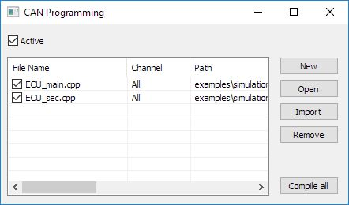
The checkbox Active is used to enable/disable CAN simulation by C++. Files can be imported or created. Existing files can be double clicked to open the IDE. A specific Channel can be selected from drop down in column Channel. Default "All" means that all received CAN traffic is routed to corresponding C++ file.
In the IDE you get context drop down menus for CAN data base variables like in following image:
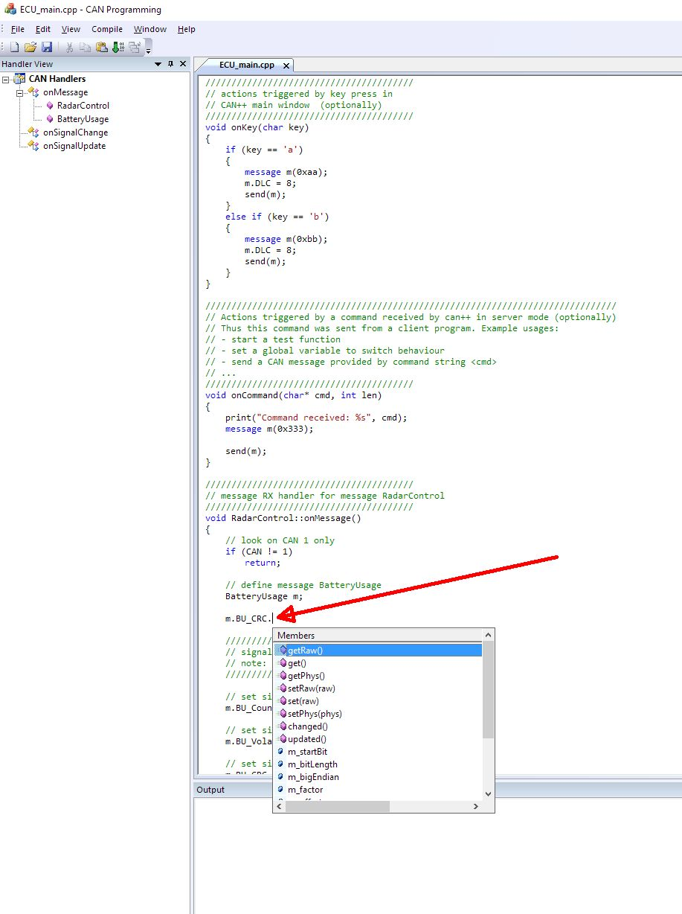
Furthermore by right click at the cursor position you get a drop down menu with "Insert Database Element" to select a CAN message from Database Browser.
To compile all C++ files do:
Compile => Compile All
or press on the green arrow icon in the toolbar:
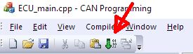
Compiler errors will be shown in the "Output" window. By double clicking on a red error message cursor will jump to the corresponding line in the editor.
CAN diagnostics
Following CAN diagnostics can be performed:
- faultmemory (read and clear)
- measurement data (cyclic and single read)
- identification
- import PDX files
- send tester present
Fault memory window:
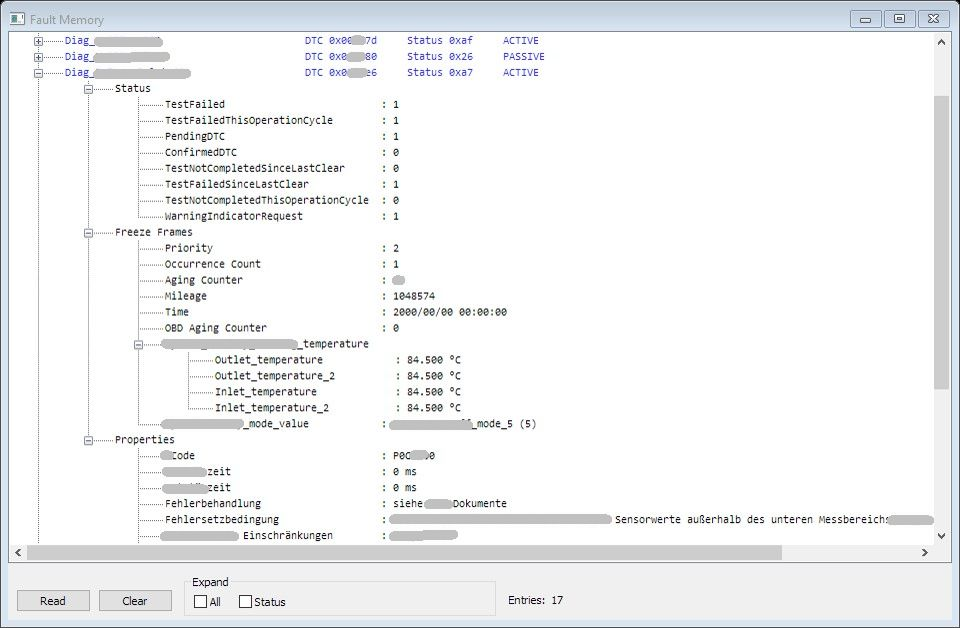
Measurements window:

CAN statistics
CAN statistics are show in separate window by:
CAN => Statistics
or by toolbar

Tips
How to flash SuperCAN firmware on Adafruit Feather M4 CAN Express (on Windows)
- download SuperCAN firmware file supercan-firmware.tar.xz from https://github.com/jgressmann/supercan/releases/tag/latest-master
- Unpack supercan-firmware.tar.xz (7-Zip could be used), needed file is supercan.uf2
- plug in device
- push the button on the device twice
- a drive "FTHRBOOT" will show up in file explorer
- drop the file supercan.uf2 on this drive
- after 10 seconds replug the device